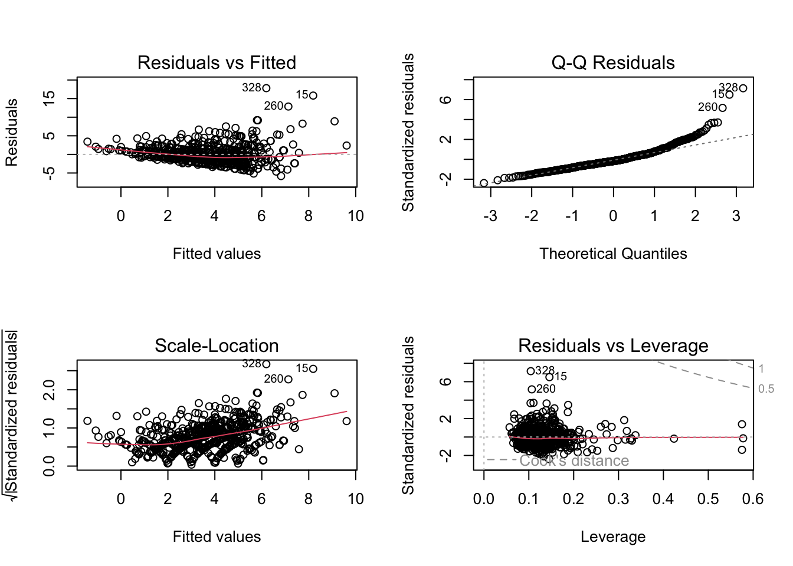
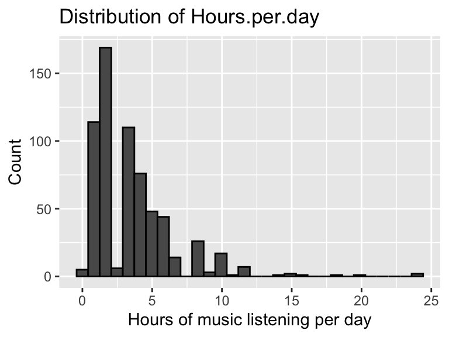
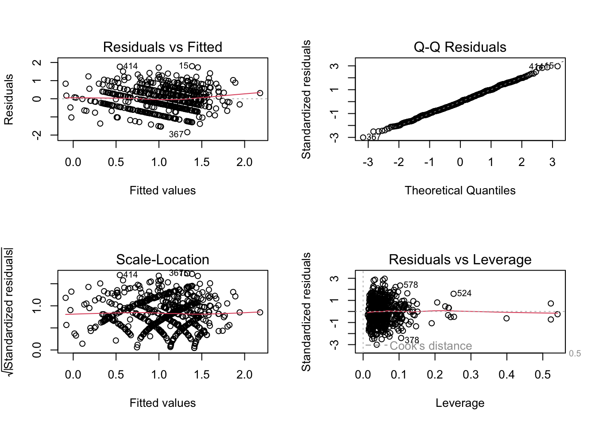
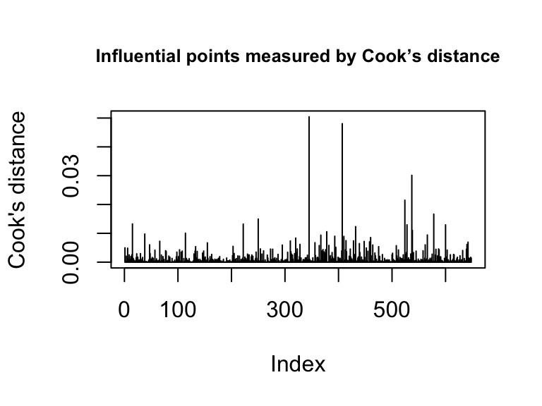
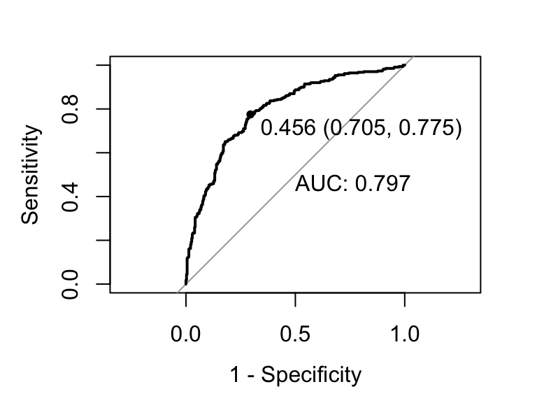

Music Mental Health Analysis
Jordan Andrew
Data
Data Background
The data used in this analysis comes from the Music and Mental Health (MxMH) Survey Results hosted on Kaggle. The dataset was collected through an online Google Form that was distributed via social media and public forums. It contains 736 respondents (rows) and includes variables on demographic characteristics (such as age), music-listening habits (hours per day, streaming platform, frequency of listening to certain genres), and self-reported mental-health scores for anxiety, depression, insomnia, and OCD (rated 0-10). The data is cross-sectional and self-reported, meaning it is suitable for identifying associations/correlations but not establishing causal effects.
Data Cleaning
Our data cleaning process began with an assessment of missing values across all columns. This revealed 107 null entries in the BPM column and a single null entry in the Age column. After looking further into the BPM data collection, we discovered that it was meant to represent the “Beats per minute of favorite genre.” However, rows with the same reported favorite genre displayed inconsistent BPM values, indicating that participants did not interpret or answer the question reliably. Combined with the large number of missing entries, this inconsistency made the variable unsuitable for analysis, so we dropped the BPM column entirely. The single row with a missing Age value was also removed to maintain completeness for demographic modeling.
Next, we examined the dataset for implausible or erroneous entries. During this process, we identified a respondent who reported being 89 years old and listening to music for 24 hours per day, and they were doing so while working. Because this combination is not physically possible and would exert undue influence on any model involving hours per day, we removed this outlier from the dataset.
We then reviewed all variables designed to accept only binary “Yes” or “No” responses. Several of these columns contained values outside of the allowed set, such as misspellings, alternative phrasing, or blank entries. To maintain consistency in these binary predictors, we filtered out any rows that did not provide valid “Yes” or “No” answers across all such variables, resulting in the removal of nine additional rows.
After this, we checked the music effects variable and found seven cases where respondents left this question blank. Because an empty string does not constitute a valid category and this variable is used in later modeling, we removed these seven rows as well.
For analyses involving streaming services, we examined the primary streaming service column and identified two types of unusable entries: blank responses and the explicit answer “I do not use a streaming service.” Because our first research question specifically compares listening patterns across streaming platforms, respondents without a platform could not be meaningfully included in that analysis. Therefore, for the dataset used in RQ1, we removed all rows with missing streaming-service information as well as those who reported not using any streaming service.
Finally, to prepare the binary outcome for our second research question, we created a high depression variable that flags individuals with elevated symptom levels. Because the average depression score in the dataset was 4.82 and the median was 5, we designated respondents with a score of 6 or higher as experiencing “high depression.” This threshold represents a meaningful distinction between typical responses and substantially elevated symptom reports, allowing us to model the likelihood of more severe depression symptoms.
Models
Research Question 1: “How does the number of hours spent listening to music per day vary by depression status and primary streaming service?”
To investigate how the number of hours spent listening to music per day varies based on depression symptoms and primary streaming service, we fit a multiple linear regression model using hours per day as the continuous response variable. Linear regression is appropriate for this question because the goal is to estimate how the average listening duration changes across different levels of depression and across streaming platforms, while adjusting for potential confounders. We also included an interaction term between depression and primary streaming service, which tests whether the association between self-reported depression symptoms and daily listening time differs by the platform a respondent uses.
Beyond the primary predictors of depression and primary streaming service, we included a set of covariates to reduce potential confounding and isolate the effects of depression and steaming service on listening time. These covariates were selected because they relate to both music-listening behavior and mental-health-related characteristics without making the model too busy. These covariates include age, while working (whether the respondent listens while working), instrumentalist (yes/no), composer (yes/no), exploratory (whether they tend to explore new music), foreign languages (whether they tend to listen to music in foreign languages), and three mental health related variables (anxiety, insomnia, OCD, all self-reported on a scale of 0-10). We also included two music-related behavioral factors, favorite genre and music effects, to account for genre preferences and how individuals perceive music impacts their emotions. Including these variables helps adjust for individual differences in music engagement, mental-health comorbidity, and daily listening contexts that could otherwise bias the estimated relationships.
Our model, which follows the linear regression framework, relies on the standard assumptions of linearity, independence of observations, homoscedasticity, and normally distributed residuals. We also assumed that there was no multicollinearity among predictors, and all of these assumptions were assessed via diagnostic plots/tests.
Research Question 2: “Does the number of hours spent listening to music each day increase the likelihood of reporting high depression symptoms?”
For our second research question, which sought to determine if the number of hours spent listening to music each day increases the likelihood of reporting high depression symptoms, we fit a logistic regression model with a binary outcome. Logistic regression is appropriate because the response variable, high depression, classifies respondents as either above or below a threshold level of self-reported depressive symptoms, and the model estimates how the log-odds of being in the high-depression category change with daily listening time.
Outside of our outcome variable of high depression and our primary independent variable, daily hours spent listening to music, we also included several covariates. Specifically, we adjusted for age, indicators of music engagement (instrumentalist and composer), co-occurring mental-health conditions (anxiety, insomnia, and OCD), and two global music-use characteristics (favorite genre and music effects). These variables may influence both how much an individual listens to music and their underlying likelihood of experiencing elevated depressive symptoms, thereby helping reduce confounding effects.
Logistic regression, and therefore our model, assumes independent observations, linearity of continuous predictors on the log-odds scale, and the absence of multicollinearity, all of which were checked via plots and tests.
Assessment and changes
Research Question 1
The first model we fit for RQ1 was a linear regression model that regressed the raw outcome of hours of music listening per day on all available predictors in the data set.
After fitting this initial model, we first examined the standard diagnostic plots, as shown above: Residuals vs Fitted, Normal Q-Q, Scale-Location, and Residuals vs. Leverage. The Residuals vs Fitted plot revealed a strong violation of homoscedasticity, with the points forming a funnel-shape, and a small violation of linearity, where the red smoothing line curved upward rather than remaining flat. The Normal Q–Q plot showed noticeable departures from the 45 degree line, especially in the upper tail, a clear strong violation of normality. The Scale–Location plot further confirmed heteroscedasticity, with residual spread increasing at higher fitted values. Finally, the Residuals vs. Leverage plot identified several influential observations with large residuals and unusually high leverage, suggesting they were exerting disproportionate influence on the fitted model.
After examining the diagnostic plots, we assessed multicollinearity using GVIF values, which adjust for the degrees of freedom of multi-level categorical variables. For most predictors, including age, musician traits, mental-health indicators, and the genre-frequency variables, the adjusted \(\text{GVIF}^{1/(2 \cdot \text{Df})}\) values were all close to 1.1-1.3, indicating low multicollinearity and no immediate concern for inflation of variance. The interaction term between depression and primary streaming service also showed a modest adjusted GVIF value of approximately 1.10, further supporting stability in these estimates.
One exception was favorite genre, a 16-level categorical variable, which produced a very large raw GVIF (≈ 2400). However, its adjusted value, \(\text{GVIF}^{1/(2 \cdot \text{Df})} \approx 1.30\), fell well within acceptable thresholds, since high raw GVIF numbers are expected for factors with many degrees of freedom. No predictors exhibited adjusted GVIF values approaching levels (≈ 2 or 3) that would indicate problematic multicollinearity.

Because the full model included many weakly justified predictors, we fit a reduced model to improve parsimony and check whether the diagnostic issues were caused by unnecessary complexity. We also inspected a histogram of hours per day, pictured above, which was strongly right-skewed, suggesting structural issues with the outcome itself. The reduced model produced essentially the same adjusted R² (≈0.16) and similar residual behavior, with persistent violations of linearity, homoscedasticity, and normality, plus influential points. This showed that removing predictors did not improve model fit and that the underlying outcome distribution, not just model complexity, was driving the diagnostic problems.

To address this we applied a log transformation to the outcome and re–fit the model with \(\log(\text{Hours per day} + 0.1)\) as the response. On the log scale, the Residuals vs fitted plot and Q–Q plot showed substantially more symmetric and homoscedastic residuals (as shown above) and the histogram of the transformed outcome indicated a much more balanced distribution. These improvements suggested that the log–transformed model better met the assumptions of linear regression. We also used variance inflation factors (VIFs) to check for multicollinearity among predictors and did not find strong evidence of a violation.

To evaluate influential observations, we computed Cook’s distance for the log-transformed RQ1 model and examined the corresponding plot. We also inspected the residual and leverage diagnostic plots for outliers. Combining these approaches, we identified three extreme points to remove: two points were flagged as outliers in both the diagnostic plots and Cook’s distance, and one additional point appeared as an outlier only in the diagnostic plots. After removing these three extreme points , we refit the log-transformed model. The residuals are now more symmetrically distributed (Min = -1.84, Max = 1.80, Median ≈ 0), and the residual standard error decreased to 0.625, indicating improved model fit.
Several predictors remain significant, including Depression, Primary streaming service, While working, Instrumentalist, Composer, Insomnia, and select favorite genres, with interactions between Depression and streaming platform also holding. The adjusted \(R^2\) increased to 0.220, showing that the log transformation and removal of influential points slightly improved the explained variance.
| Model | Adj_R2 | AIC |
|---|---|---|
| Raw model | 0.1938095 | 3173.908 |
| Reduced model | 0.1579996 | 3158.997 |
| Log transform | 0.2324734 | 1309.501 |
| Log transform + remove outliers | 0.2198529 | 1260.190 |
Table 1 presents a comparison of the models for RQ1 using adjusted \(R^2\) and AIC. The raw model explained about \(19\%\) of the variance but had a high AIC, reflecting poorer fit. Reducing predictors slightly lowered adjusted \(R^2\) but improved AIC marginally. Applying the log transformation improved both adjusted \(R^2\) (to 0.232) and AIC (to 1309), indicating better model performance. Finally, removing the three outliers slightly reduced adjusted \(R^2\) to 0.220 but further lowered AIC to 1260, suggesting a more parsimonious and stable model. Overall, the log-transformed model with outliers removed balances interpretability, fit, and the influence of extreme points, and became our primary model for question 1.
| Term | Estimate | Std Error | statistic | p-value | 2.5% CI | 97.5% CI |
|---|---|---|---|---|---|---|
| \(Intercept\) | -0.133 | 0.237 | -0.5611308 | 0.575 | -0.597 | 0.332 |
| Depression | 0.106 | 0.032 | 3.2931047 | 0.001 | 0.043 | 0.169 |
| Primary.streaming.serviceOther streaming service | 0.696 | 0.245 | 2.8455457 | 0.005 | 0.216 | 1.177 |
| Primary.streaming.servicePandora | 0.776 | 0.355 | 2.1878891 | 0.029 | 0.079 | 1.472 |
| Primary.streaming.serviceSpotify | 0.577 | 0.197 | 2.9249186 | 0.004 | 0.189 | 0.964 |
| Primary.streaming.serviceYouTube Music | 0.625 | 0.216 | 2.8988409 | 0.004 | 0.202 | 1.048 |
| Age | -0.005 | 0.003 | -2.0325505 | 0.043 | -0.010 | 0.000 |
| While.workingYes | 0.605 | 0.065 | 9.3626702 | <0.001 | 0.478 | 0.732 |
| InstrumentalistYes | -0.160 | 0.063 | -2.5549132 | 0.011 | -0.283 | -0.037 |
| ComposerYes | 0.152 | 0.075 | 2.0181945 | 0.044 | 0.004 | 0.300 |
| ExploratoryYes | 0.072 | 0.061 | 1.1673916 | 0.244 | -0.049 | 0.192 |
| Foreign.languagesYes | 0.060 | 0.054 | 1.1261125 | 0.261 | -0.045 | 0.165 |
| Anxiety | 0.000 | 0.011 | 0.0427548 | 0.966 | -0.022 | 0.023 |
| Insomnia | 0.026 | 0.009 | 2.8836975 | 0.004 | 0.008 | 0.044 |
| OCD | 0.019 | 0.010 | 1.9530351 | 0.051 | 0.000 | 0.037 |
| Fav.genreCountry | 0.149 | 0.168 | 0.8892265 | 0.374 | -0.180 | 0.479 |
| Fav.genreEDM | 0.248 | 0.149 | 1.6591055 | 0.098 | -0.046 | 0.542 |
| Fav.genreFolk | 0.094 | 0.161 | 0.5845425 | 0.559 | -0.223 | 0.411 |
| Fav.genreGospel | 0.060 | 0.317 | 0.1889684 | 0.850 | -0.562 | 0.682 |
| Fav.genreHip hop | 0.134 | 0.153 | 0.8818361 | 0.378 | -0.165 | 0.434 |
| Fav.genreJazz | 0.403 | 0.175 | 2.3074706 | 0.021 | 0.060 | 0.747 |
| Fav.genreK pop | -0.072 | 0.175 | -0.4120588 | 0.680 | -0.417 | 0.272 |
| Fav.genreLatin | 0.954 | 0.457 | 2.0872769 | 0.037 | 0.056 | 1.851 |
| Fav.genreLofi | 0.060 | 0.227 | 0.2636701 | 0.792 | -0.386 | 0.506 |
| Fav.genreMetal | 0.132 | 0.126 | 1.0502311 | 0.294 | -0.115 | 0.378 |
| Fav.genrePop | -0.117 | 0.120 | -0.9754466 | 0.330 | -0.354 | 0.119 |
| Fav.genreR and B | 0.128 | 0.153 | 0.8348958 | 0.404 | -0.173 | 0.429 |
| Fav.genreRap | 0.283 | 0.176 | 1.6140922 | 0.107 | -0.061 | 0.628 |
| Fav.genreRock | 0.097 | 0.115 | 0.8419446 | 0.400 | -0.129 | 0.322 |
| Fav.genreVideo game music | -0.266 | 0.156 | -1.7049786 | 0.089 | -0.573 | 0.040 |
| Music.effectsNo effect | 0.017 | 0.063 | 0.2704797 | 0.787 | -0.106 | 0.140 |
| Music.effectsWorsen | -0.106 | 0.175 | -0.6037773 | 0.546 | -0.450 | 0.238 |
| Depression:Primary.streaming.serviceOther streaming service | -0.165 | 0.043 | -3.8441528 | <0.001 | -0.250 | -0.081 |
| Depression:Primary.streaming.servicePandora | -0.207 | 0.067 | -3.1180379 | 0.002 | -0.338 | -0.077 |
| Depression:Primary.streaming.serviceSpotify | -0.103 | 0.033 | -3.0904123 | 0.002 | -0.169 | -0.038 |
| Depression:Primary.streaming.serviceYouTube Music | -0.140 | 0.038 | -3.6613614 | <0.001 | -0.215 | -0.065 |
Table 2 shows that depression is associated with higher listening time (\(\hat{\beta} = 0.106, p = 0.001\)), but this effect is reduced for users of major streaming platforms, as indicated by the negative interaction terms (e.g., Spotify: \(\hat{\beta} = -0.103, p = 0.002\); YouTube Music: \(\hat{\beta} = -0.140, p < 0.001\)). Several platforms also have positive main effects: Spotify (\(\hat{\beta} = 0.577, p = 0.004\)), YouTube Music (\(\hat{\beta} = 0.625, p = 0.004\)), Pandora (\(\hat{\beta} = 0.776, p = 0.029\)), and Other services (\(\hat{\beta} = 0.696, p = 0.005\)). All of these predict higher log-hours relative to the baseline streaming category, Apple Music.
Listening while working has the largest coefficient in the model (\(\hat{\beta} = 0.605, p < 0.001\)), indicating substantially higher daily listening. Additional significant predictors include insomnia (\(\hat{\beta} = 0.026, p = 0.004\)), being a composer (\(\hat{\beta} = 0.152, p = 0.044\)), being an instrumentalist (\(\hat{\beta} = -0.160, p = 0.011\)), age (\(\hat{\beta} = -0.005, p = 0.043\)), and two favorite genres: Jazz (\(\hat{\beta} = 0.403, p = 0.021\)) and Latin (\(\hat{\beta} = 0.954, p = 0.037\)). Most remaining predictors have confidence intervals crossing zero, indicating no detectable association with listening time.
Research Question 2
For RQ2, we modeled a binary outcome indicating “high depression” (depression score ≥ 6) using logistic regression, with daily listening time (Hours per day) as our primary predictor.

Because logistic regression assumes that continuous predictors have a linear relationship with the log–odds of the outcome, we began by checking this assumption for Hours per day using a component–plus–residual (partial residual) plot. This plot did not reveal strong curvature or systematic departures from linearity, as the pink line was fitted very tightly to the blue, so we retained Hours per day in linear form.
We then examined several additional diagnostics. First, we used VIFs to assess multicollinearity among the predictors and did not detect problematic levels of collinearity. Second, we evaluated overall model fit with a Hosmer–Lemeshow goodness–of–fit test, which revealed a p-value greater than 0.05 (0.1641), meaning the test indicates no substantial issue with the fitting of the model.
We calculated leverage values using the hat matrix and identified several observations above the common threshold of \(2\bar{h}\). However, high leverage alone is not sufficient evidence to remove points in logistic regression, particularly in models with many categorical predictors. Because these cases did not show extreme Pearson residuals either, we retained all observations for the final model.
| TN | FP | FN | TP | Accuracy | Kappa | Sensitivity | Specificity | Precision | Recall | F1 | Balanced Accuracy |
|---|---|---|---|---|---|---|---|---|---|---|---|
| 277 | 95 | 103 | 243 | 0.724 | 0.447 | 0.719 | 0.729 | 0.702 | 0.719 | 0.711 | 0.724 |
To assess predictive performance, we computed an initial confusion matrix (Table 3) based on the conventional 0.5 probability threshold. The initial confusion matrix showed 277 true negatives, 243 true positives, 95 false negatives, and 103 false positives, yielding an overall accuracy of 0.724. Sensitivity was 0.719, meaning the model correctly identified about 72% of participants with high depression, while specificity was 0.729, indicating a similar rate of correct classification among low-depression participants. The model’s precision (0.702) and F1 score (0.711) suggested moderate predictive performance but also revealed room for improvement, particularly in reducing false negatives.

To further assess model performance, we examined the ROC curve and computed the AUC. The model achieved an AUC of 0.797, indicating strong discriminative ability. The optimal classification threshold was identified as 0.456, which balances sensitivity and specificity more effectively than the default 0.50 cutoff.
| TN | FP | FN | TP | Accuracy | Kappa | Sensitivity | Specificity | Precision | Recall | F1 | Balanced Accuracy |
|---|---|---|---|---|---|---|---|---|---|---|---|
| 268 | 76 | 112 | 262 | 0.738 | 0.478 | 0.775 | 0.705 | 0.701 | 0.775 | 0.736 | 0.74 |
At this optimized threshold, we recomputed the confusion matrix (Table 4), and sensitivity increased from 0.719 to 0.775, meaning the model detected a larger proportion of high-depression cases, while specificity remained reasonably high at 0.705. Overall accuracy also improved from 0.724 to 0.738, and the F1 score increased from 0.711 to 0.736, demonstrating that threshold adjustment meaningfully enhanced the model’s ability to classify high depression symptoms.
Finally, we tested whether hours per day meaningfully improved the logistic regression model by comparing the full model to a reduced model that excluded this predictor. A likelihood ratio test showed no significant improvement from adding hours per day \((\chi^2(1) = 2.23,\; p = 0.135)\), indicating that daily music-listening hours do not provide additional explanatory power for predicting high depression symptoms once other factors are accounted for. Model fit indices aligned with this result: the AIC values for the reduced and full models were nearly identical (839.39 vs. 839.16), confirming that including hours per day does not meaningfully enhance model performance. However, because our research question specifically examines the role of daily listening time, we retain the full model as our primary specification.
| Term | Odds Ratio | Std Error | statistic | p-value | 2.5% CI | 97.5% CI |
|---|---|---|---|---|---|---|
| (Intercept) | 0.08 | 0.52 | -4.8161509 | p<0.001 | 0.03 | 0.22 |
| Hours.per.day | 1.05 | 0.03 | 1.4764301 | 0.140 | 0.99 | 1.12 |
| Age | 0.99 | 0.01 | -1.4976696 | 0.134 | 0.97 | 1.00 |
| InstrumentalistYes | 0.94 | 0.22 | -0.2893564 | 0.772 | 0.61 | 1.43 |
| ComposerYes | 1.13 | 0.26 | 0.4570654 | 0.648 | 0.68 | 1.87 |
| Anxiety | 1.40 | 0.04 | 8.6830117 | p<0.001 | 1.30 | 1.51 |
| Insomnia | 1.17 | 0.03 | 5.0936882 | p<0.001 | 1.10 | 1.24 |
| OCD | 0.97 | 0.03 | -0.7990682 | 0.424 | 0.91 | 1.04 |
| Fav.genreCountry | 0.57 | 0.59 | -0.9522194 | 0.341 | 0.17 | 1.79 |
| Fav.genreEDM | 1.18 | 0.53 | 0.3036052 | 0.761 | 0.41 | 3.37 |
| Fav.genreFolk | 0.79 | 0.53 | -0.4380352 | 0.661 | 0.28 | 2.26 |
| Fav.genreGospel | 0.20 | 1.30 | -1.2446057 | 0.213 | 0.01 | 1.99 |
| Fav.genreHip hop | 2.54 | 0.54 | 1.7321500 | 0.083 | 0.90 | 7.49 |
| Fav.genreJazz | 0.72 | 0.61 | -0.5339638 | 0.593 | 0.21 | 2.42 |
| Fav.genreK pop | 0.41 | 0.61 | -1.4771463 | 0.140 | 0.12 | 1.32 |
| Fav.genreLatin | 1.01 | 1.58 | 0.0063683 | 0.995 | 0.03 | 32.42 |
| Fav.genreLofi | 1.98 | 0.83 | 0.8259485 | 0.409 | 0.42 | 11.47 |
| Fav.genreMetal | 1.17 | 0.42 | 0.3797032 | 0.704 | 0.51 | 2.70 |
| Fav.genrePop | 0.66 | 0.41 | -1.0317028 | 0.302 | 0.30 | 1.46 |
| Fav.genreR and B | 0.73 | 0.55 | -0.5711555 | 0.568 | 0.24 | 2.13 |
| Fav.genreRap | 0.63 | 0.62 | -0.7514045 | 0.452 | 0.18 | 2.09 |
| Fav.genreRock | 1.30 | 0.38 | 0.6954891 | 0.487 | 0.62 | 2.77 |
| Fav.genreVideo game music | 0.57 | 0.49 | -1.1384220 | 0.255 | 0.21 | 1.50 |
| Music.effectsNo effect | 1.11 | 0.21 | 0.4851821 | 0.628 | 0.73 | 1.69 |
| Music.effectsWorsen | 2.60 | 0.60 | 1.5973620 | 0.110 | 0.84 | 9.14 |
Table 5 summarizes the corresponding regression results on the odds–ratio scale, including odds ratios, standard errors, confidence intervals, and p–values. Daily hours spent listening to music showed no significant association with high depression (OR = 1.05, 95% CI: 0.99–1.12, \(p = 0.140\)), indicating that each additional hour of listening time does not meaningfully change the odds of reporting elevated depression symptoms. Age was also non-significant (OR = 0.99, 95% CI: 0.97–1.00, \(p = 0.134\)), suggesting that depression levels did not vary systematically across ages in this sample.
The only strong and consistent predictors were mental–health variables already closely tied to depression. Anxiety had a large, significant effect (OR = 1.40, 95% CI: 1.30–1.51, \(p < 0.001\)), meaning that each one-unit increase in anxiety score increased the odds of high depression by approximately 40%. Insomnia also significantly increased risk (OR = 1.17, 95% CI: 1.10–1.24, \(p < 0.001\)). OCD symptoms were not significant (OR = 0.97, \(p = 0.424\)).
Neither musician status (Instrumentalist or Composer) nor any favorite–genre category significantly predicted high depression, as all confidence intervals crossed 1.0. Although ``Music effects: worsen’’ had a relatively large odds ratio (OR = 2.60), the estimate was imprecise (95% CI: 0.84–9.14, \(p = 0.110\)) and therefore not statistically reliable.
Overall, the model indicates that depression symptoms are most strongly predicted by other co-occurring mental–health indicators (anxiety and insomnia), whereas hours of music listening, demographic variables, musician traits, and musical preferences show no meaningful association with elevated depression levels.
Limitations
Our analysis has several important limitations that should be kept in mind when interpreting the results.
Self-reported and cross-sectional data: All variables in the dataset, including mental-health symptoms and daily listening habits, were self-reported. This introduces potential measurement error due to inaccurate recall, inconsistent interpretation of questions, or social desirability bias. Additionally, because the data is cross-sectional, we cannot determine temporal ordering or causality. For instance, even if hours of listening were associated with depression, we cannot know whether listening more contributes to symptoms or whether individuals with higher depression simply listen to more music.
Limited measurement of key variables: Several important constructs were captured using single questions (for example, music effects, listening to music while working, and favorite genre), which restricts measurement precision. Some mental-health scores may also overlap conceptually, as illnesses like anxiety and insomnia strongly correlate with depression. This makes it difficult to isolate unique events even when multicollinearity diagnostics appear acceptable.
Simplified representation of music behavior: Daily hours of listening is an extremely limited measure of music engagement. It does not capture when people listen (morning vs. late night), how they listen (active vs. passive), why they listen (mood regulation, entertainment, background noise), or what they listen to within genres, all of which could meaningfully relate to mental-health outcomes. Similarly, “primary streaming service” does not capture multi-platform use or variability in content algorithms.
Missing potential confounders: Several important correlated variables of depression, like socioeconomic status, employment, physical health, sleep patterns, chronic stress, and academic workload, were not measured. Their absence means our model may suffer from omitted-variable bias, limiting the interpretability of estimated relationships.
Future Work
To strengthen the results and analysis, several steps could be taken in future research:
- Collect richer and more detailed data: Future studies would benefit from using validated multi-item psychological scales, such as PHQ-9 for depression or GAD-7 for anxiety, rather than the single self-reported questions on a scale of 0-10. Incorporating more granular measures of music engagement, such as listening context, emotional motivation, time-of-day patterns, or track-level characteristics, would also allow for more accurate modeling of how different aspects of music behavior relate to mental-health outcomes.
- Use longitudinal or experimental study designs: Because the current dataset is cross-sectional, it cannot speak to temporal ordering or causal relationships. Longitudinal surveys could help determine whether music-listening habits change before shifts in mood or vice-versa. Experimental designs, such as one that involves assigning participants to specific listening conditions, would further clarify causal pathways.
- Apply more flexible modeling approaches: Although linear and logistic regression provided interpretable results, more flexible models that are outside the scope of this class, like generalized additive models, random forests, or gradient-boosted trees, could capture non-linear relationships and interactions that traditional parametric models may miss. These models could also improve predictive accuracy, especially if supplemented with richer features.
- Address unmeasured confounders and broaden co-variates: Adding variables related to sleep quality, stress, socioeconomic status, work or academic pressure, or physical health would reduce omitted-variable bias. These variables are often meaningful predictors of depression and may help clarify whether music-listening habits have independent effects.
- Expand the scope of musical data: Streaming-platform logs or acoustic features from tracks (tempo, energy, valence, etc.) would enable more detailed analysis of how specific music properties or listening patterns relate to mental-health symptoms. This would move the analysis beyond total hours per day and allow for deeper behavioral insights.
These limitations mean that our findings should be interpreted as descriptive patterns in this sample, rather than definitive evidence about the causal effect of music listening on depression. Nonetheless, the analysis provides a useful starting point for understanding how music–listening habits and mental–health symptoms co–vary in this population.